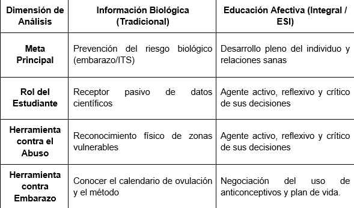

DIFERENCIA ENTRE INFORMACIÓN BIOLÓGICA Y EDUCACIÓN AFECTIVA
Información biológica
El enfoque tradicional de la sexualidad es el contenido que los estudiantes de bachillerato ya han visto de forma repetitiva desde la primaria.
- Enfoque principal: El cuerpo como sistema mecánico y reproductivo.
- Anatomía y fisiología de los aparatos reproductores masculino y femenino.
- Ciclo menstrual, ovulación y fecundación.
- Mecanismos físicos y químicos de los métodos anticonceptivos (barrera, hormonales).
- Agentes patógenos de las Infecciones de Transmisión Sexual (virus, bacterias, parásitos).
- Alcance: Es netamente conceptual e informativo. Le dice al alumno cómo funciona su cuerpo, pero no le enseña a gestionar situaciones complejas con otras personas.
Educación afectiva y formación en valores
Este es el componente relacional, psicológico y ético. Es la base de la Educación Sexual Integral (ESI) y el pilar indispensable para cumplir con la "formación integral" que exige el Modelo Educativo del IPN.
- Enfoque principal: El desarrollo de habilidades socioemocionales, el autoconocimiento y la toma de decisiones éticas.
- Consentimiento: Entender que el consentimiento debe ser entusiasta, reversible, informado, específico y libre (sin presiones ni alcohol de por medio). Este es mecanismo directo contra el abuso sexual.
- Valores interpersonales: Respeto mutuo, responsabilidad afectiva, empatía, equidad de género y asertividad.
- Autonomía e Identidad: Autoestima, límites corporales ("mi cuerpo es mío"), reconocimiento del placer y construcción de un plan de vida.
- Alcance: Es actitudinal y procedimental. Le da al estudiante las herramientas cognitivas para decir "no", identificar una línea de violencia en el noviazgo o dialogar con su pareja sobre el uso del condón.
